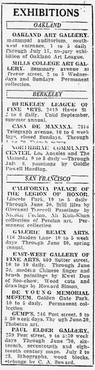

Exhibitions — San Francisco listings
访问原网页 ↗Visit original website ↗

S062 · Oakland Tribune · 1928-06-24
东⻄美术画廊展出 Kwei Dun 的指画与毛笔画，展讯列旧金山 Sutter Street 609 号及6月30日闭展。The East-West Gallery of Fine Arts, 609 Sutter Street, lists Kwei Dun’s finger and brush paintings through 30 June.
馆藏图像与原文Archived images and documents

原始网址Original URL
https://blogger.googleusercontent.com/img/b/R29vZ2xl/AVvXsEhOLSgXWR7iJVITgAOPCXIRAjMvXwQDxQYCF5N4CSOOjtYHw-AAONzBQcfhYoRTh_klUOlsccmnTlz5N2nmMp6tr0l8NwHfITkfa_6pCQiw_x_QdCrwaPF1kWV8Izcj7N0sZKv8mFwBm04h/s1600/1928_06_24+Kwei+Dun++Oakland+Tribune+(CA).jpg